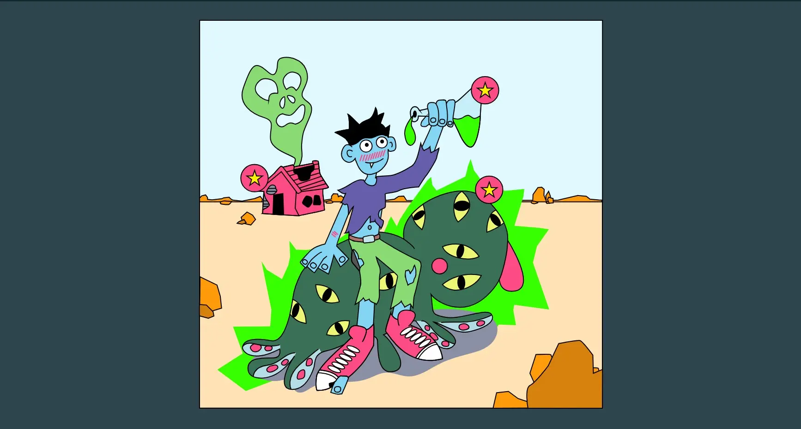
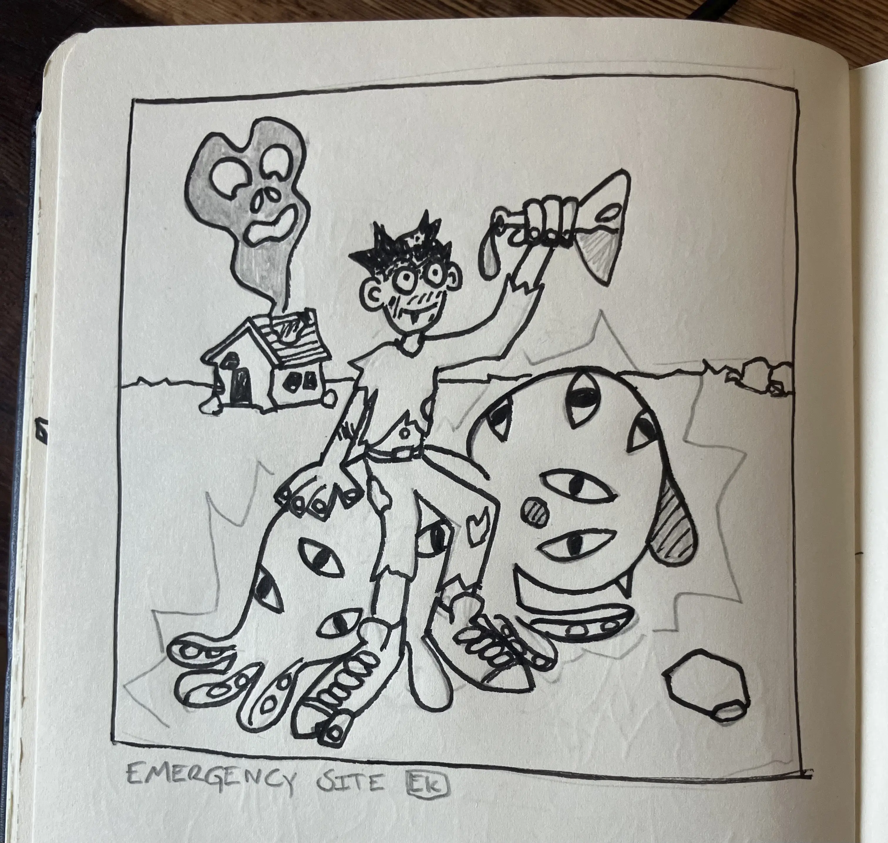
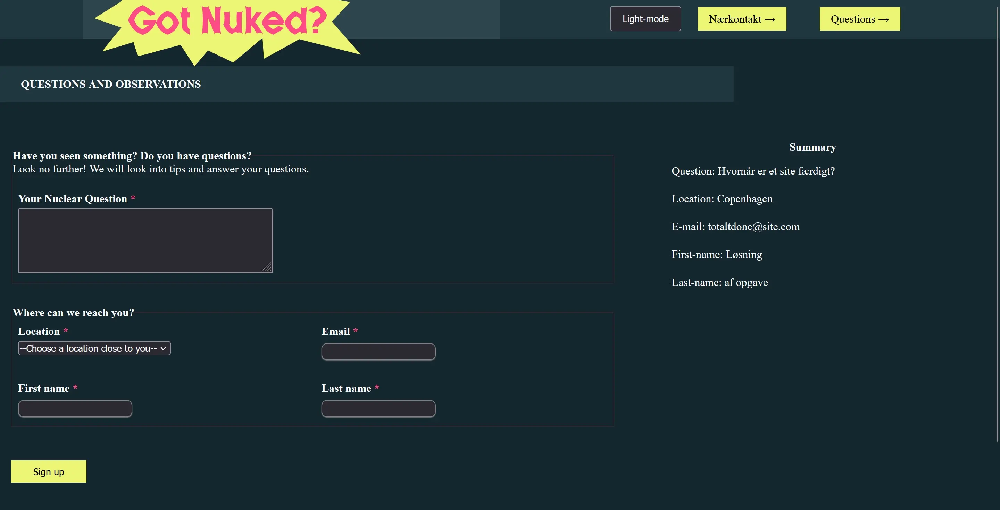
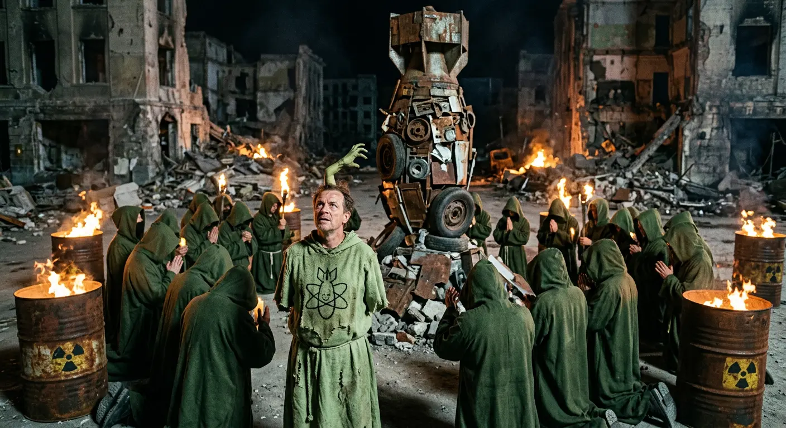

Tema 4
Grundlæggende brugergrænseflade-
udvikling

Temaet
I dette tema fik vi udleveret et halvfærdigt site hvor vi skulle arbejde med brugergrænseflader og et koncept som hed “emergency site” hvorunder vi selv skulle finde på en “emergency”


Formålet
Formålet med dette site og tema var at lære om brugergrænseflader, illustrator og vektorgrafik samt at bruge javascript for første gang for at optimere funktionaliteten på et site

Proces
Jeg startede med en brainstorm om emergencys hvor jeg endte med at gå med klassikeren som er en atom apokalypse, herefter blev der lavet moodboard, samlet farver sammen og fundet fonte som blev kogt ned til et styletile som nemt blev implementeret på sitet da det meste af koden var lavet for os.
Herefter skitsede jeg på en tegning som man skulle kunne klikke på for at finde ud af information og apokalypsen, den blev efterfølgende tegnet op i illustrator, eksporteret og implementeret.
Nu begyndte jeg at pille ved javascript for at skabe nogle klikbare elementer på svg illustrationen.på index siden skulle vi inkorporere knapper som lavede pop up vinduer med information, det var lidt svært så der skulle lige et par besøg på diverse kode skole hjemmesider til men så var sitet ellers ved at være der.
Løsning
Det færdige site blev et atom apokalyptisk et af slagsen med tilhørende billede og illustrationer og farver man ville kunne finde i apokalypsen.
det indeholder klikbare svg elemter som er interaktive, et formular side hvor man kan rapporterer ting man har fundet i ødemarken og en forside med vigtig info, teaser tekst og pop up vinduer med artikler.


Læring og reflektion
Dette projekt var efter min mening ret forvirrende og usammenhængende i sin struktur, dog kom man ud på den anden side med nye færdigheder inden for forms og javascript som jeg er meget glad for at kunne.